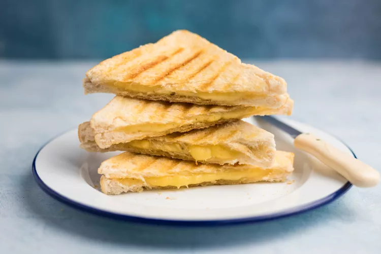

Cheese Toastie

A grilled cheese (sometimes known as a toasted sandwich or cheese toastie)
is a hot cheese sandwich typically prepared by heating slices of cheese between
slices of bread with a cooking fat such as butter or mayonnaise on a frying pan
, griddle, or sandwich toaster, until the bread browns and the cheese melts.
Ingredients
- 1 tablespoon salted butter
- 4 slices good-quality bread
- 2 ounces cheddar cheese
- Kosher salt, to taste
- Freshly ground black pepper, to taste
Steps
- Butter one side of each slice of bread. We don't recommend buttering both
sides of the bread for a cheese toastie since it can make the sandwich a bit soggy.
- Grate the cheddar cheese using a large hole grater (if you use a small hole the cheese will melt too quickly before the bread has toasted).
Divide the cheese between 2 slices of bread, placing it on the unbuttered side.
- Season with a bit of salt and pepper to taste.
- Cover with the second slice of bread, buttered-side up.
- Heat your griddle or frying pan to hot but not smoking. Using a flat spatula, lay the 2 sandwiches into the hot pan (they should sizzle a little as they hit the pan—if not, the pan is not hot enough). Gently press the sandwich with the spatula and do not worry if the cheese leaks a little. Cook for a few minutes
on one side pressing from time to time, then flip it over and repeat on the other side.
- Remove from the pan once the cheese is starting to melt
and the bread has turned a golden brown.
- Cut diagonally in half and serve immediately piping hot.